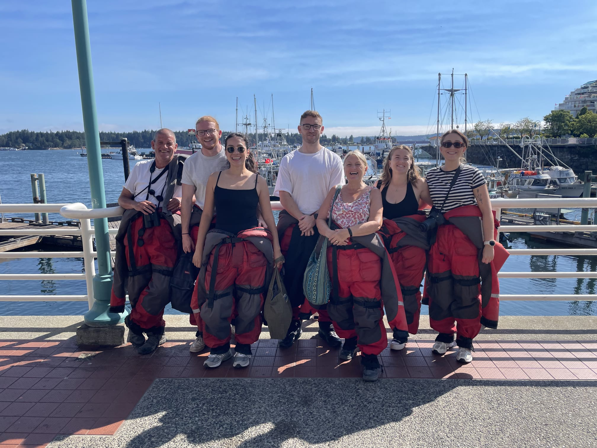
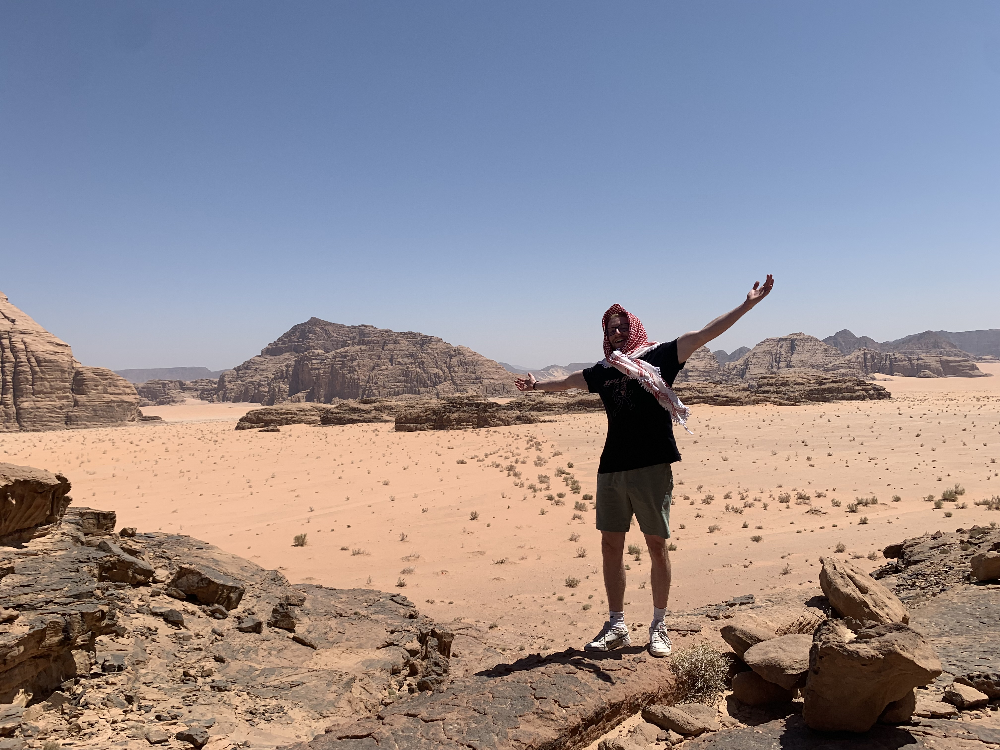
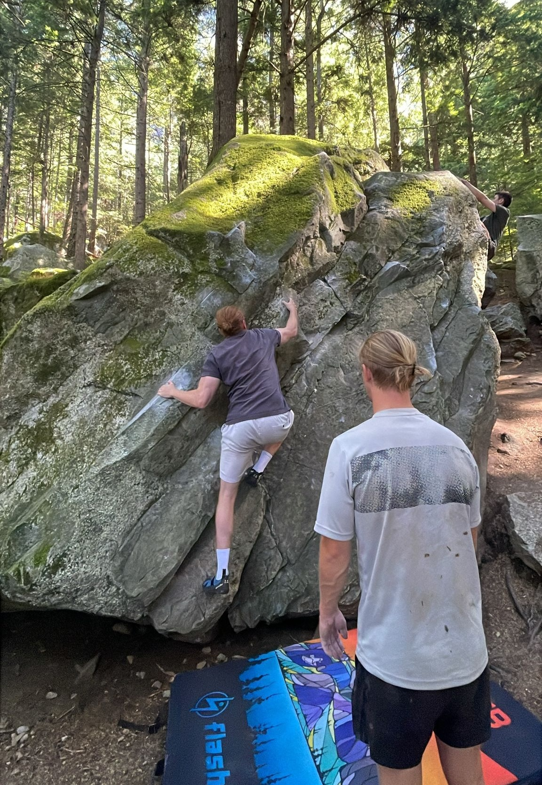

I've always been drawn to the space where geography meets real-world impact. What started as a fascination with maps turned into a career analysing spatial data, building GIS systems, and helping organisations make better decisions about the land, resources, and communities they work with.
Some of the work I'm proudest of sits outside a typical office brief — mapping vegetation for anti-poaching efforts, tracking endangered species across shifting terrain, spending time in Bolivia co-managing volunteers at an animal rescue sanctuary. GIS, for me, has never just been about the software. It's a way of understanding the world a little more clearly, and occasionally doing some good while I'm at it.
Outside of work, I chase the same instinct in a different form — travel, the outdoors, and the occasional questionable decision to jump off a bridge attached to a giant elastic band. If there's a map involved, or a reasonable amount of adrenaline, I'm probably interested.


